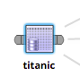
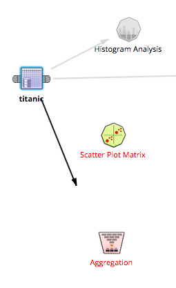
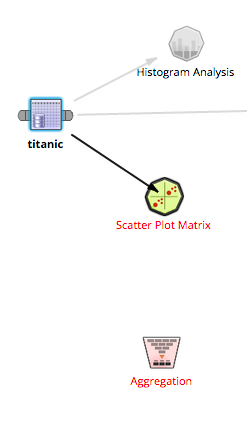
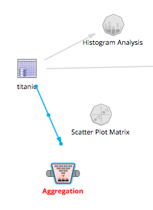

- 把操作单元拖拽到工作流后，用户可通过操作单元的“耳朵”进行连接。
 - 选中操作单元，其“耳朵”就会出现。拖拽一只“耳朵”，出现连接的箭头。与当前操作单元能连接的操作单元保持原样，不能连接的操作单元变灰。
 - 把箭头拖拽到目标操作单元，同时目标操作单元的轮廓加深，即可完成连接。删除箭头，连接也删除。

- 选中连接（变蓝），单击连接中间的点，即可删除。
- 选中连接（变蓝），拖拽箭头的头或者尾，即可移动
- 当建立一个连接时，操作单元的颜色表明连接的有效和无效。

- 选中一个操作单元（蓝色高亮显示），点击工具条中的“删除”。删除此操作单元，与此操作单元相连的连接也被删除。
- 或者选中操作单元，右键的菜单选择“删除操作单元”。

- 多个操作单元可用Ctrl键（Linux/Windows）或Command键（Mac OS）选中，点击删除，多个操作单元和与其相连的连接都被删除。